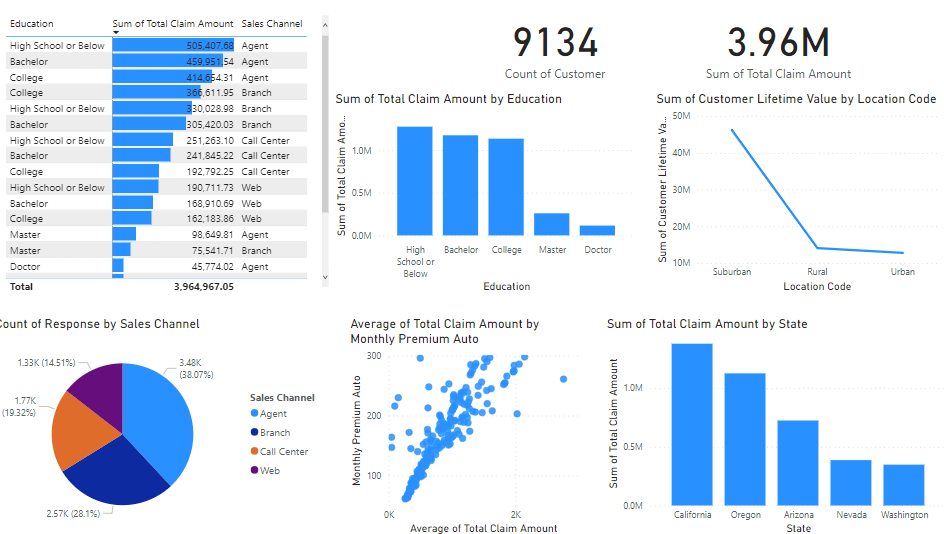
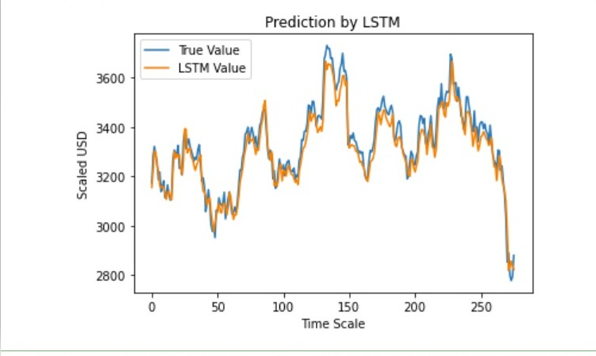
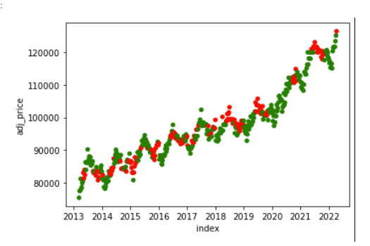
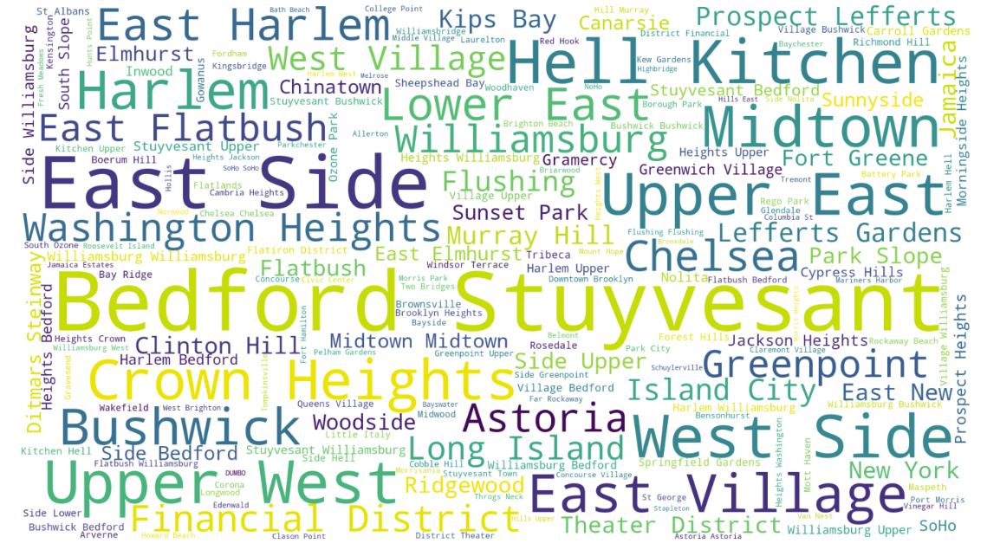
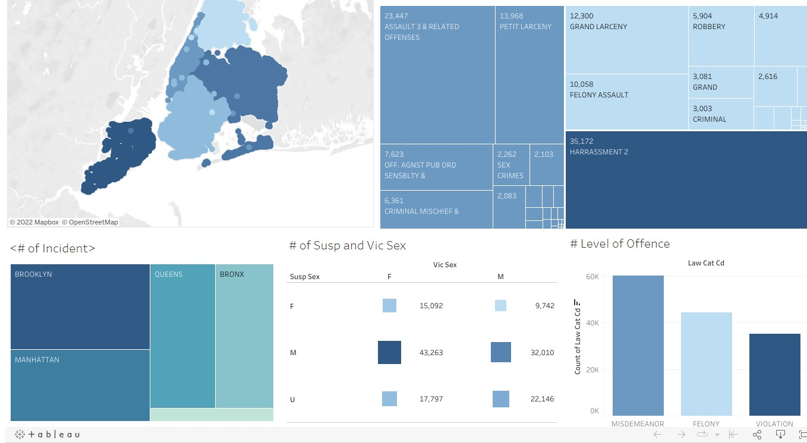
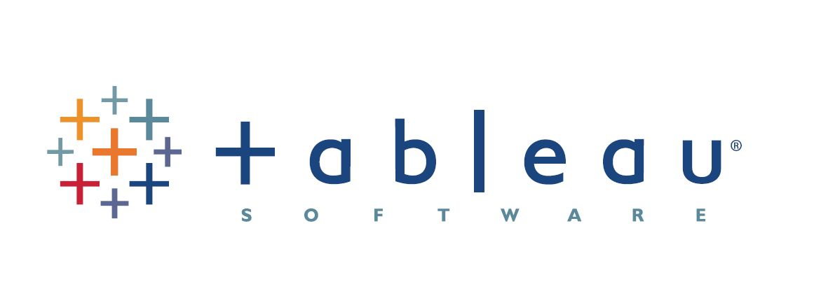

For this research I assume the post of a Senior Analyst where I anticipated that my research will show patterns, trends, or connections between factors that might improve consumer behavior and retention. I got insight into consumer behavior that helped stakeholders make better data-driven decisions about customer retention and, most significantly, raise their organization's profits. Skills demonstrated: Data Collection, Data Analysis and Exploration.


This was my semester project for my INFX 501 class. I utilized the LSTM model that mimics the closing value of amazon stock given any features with Python.

For this research I utilized a supervised learning algorithm that utilizes different models that predict the car price given new instances. I used Jupyter python for the implementation of machine learning concepts. Skills demonstrated include assessing the model’s input data quality thereby enhancing system performance and creating the most accurate predictions possible.

This was an end of the semester project for my machine learning class INFX 598 class. I collected data to use from the US Federal Reserve and Zillow in this study. Developed a Random Forest classifier model to predict the house prices.
This research identified users' requirements, created task-flows, and personas based on interviews with end-users, created sketches, scenarios, and design alternatives, designed prototypes, and usability testing based on usability goals of the chosen design system for inventory management at the Center for Advanced Computer Studies (CACS) at UL Lafayette.

This project utilizes the Airbnb dataset for New York City from insideairbnb.com. Unveiling valuable information on listings, reviews, and calendar availability, the dataset provides insights into property attributes, reviewer details, and booking dates. Through data exploration, analysis, and forecasting, this project offers compelling insights into the Airbnb market in NYC.

Harness the power of HR analytics to unravel attrition patterns. Deeply explore the dataset, scrutinize variables like age, income, satisfaction, rating, and work-life, using advanced statistical techniques. Visualize with elegance using scatterplots, pie charts, and box plots. Uncover actionable insights and recommendations to curb turnover, enhance retention, and predict attrition with precision. Elevate your organization's success through data-driven HR strategies.

As an analyst, I was tasked to explore to the NYC crime data to give an insight on how to address the crime issue. I utilized Google Sheet for data cleaning, SQL for

My Tableau Public profile may be found here. It features dashboards reports that I created.